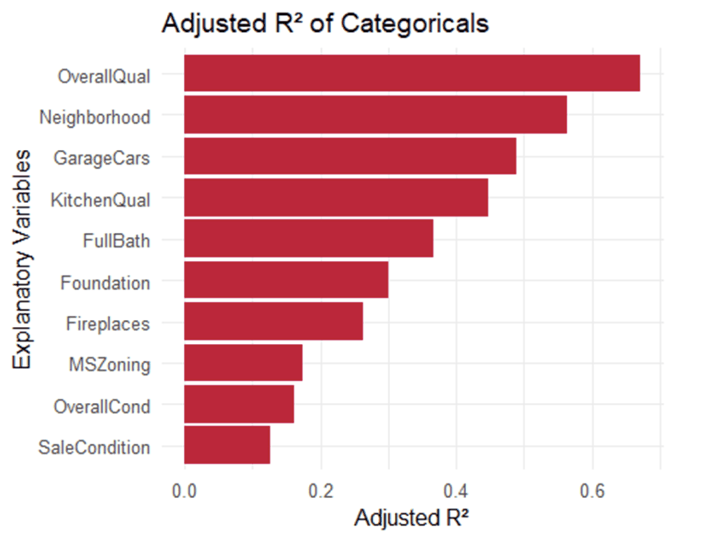

Sale Price Prediction
Two questions on the same Ames, Iowa housing dataset: does the price you get per square foot depend on which neighborhood you're in, and separately, how accurately can sale price be predicted for a citywide Kaggle competition?
Does price-per-square-foot depend on the neighborhood, and how well can price be predicted?
A realtor client wanted to know whether an extra 100 square feet of living area is worth the same amount everywhere in Ames, or whether that depends on the neighborhood. Separately, a Kaggle competition asked a broader question: build the most accurate sale price model possible, using whatever predictors help.
Ames, Iowa home sales
1,460 residential home sales with 79 recorded variables covering size, quality, condition, and location. The neighborhood question focused on three neighborhoods: NAmes, Edwards, and BrkSide.
Two questions, two ways of answering them
For the neighborhood question, I log-transformed price and living area to improve model fit and assess regression assumptions, then tested whether adding a neighborhood-by-area interaction improved the model. For the prediction question, I compared four candidate models of increasing complexity and validated the winner against standard regression diagnostics before submitting to Kaggle.
The fitted size–price relationship varied by neighborhood
The log living-area × neighborhood interaction was statistically significant in this sample (F = 8.649, p = 0.0002). This indicates differing fitted proportional size–price relationships, not a constant dollar value per additional square foot.

The fitted BrkSide relationship had a lower intercept and steeper slope than NAmes. The Edwards slope difference from NAmes was not statistically significant (p = 0.52); this does not establish that the slopes are identical.
The final model achieved an adjusted R² of about 0.867 for log price
Adding overall quality, garage area, basement size, and neighborhood on top of living area moved the model from a rough baseline to a strong predictor, and it held up on Kaggle's held-out test set.
| Model | Adj. R² | CV PRESS | AIC | Kaggle Score |
|---|---|---|---|---|
| Simple Linear Regression | 0.668 | 77.5 | -2823.5 | 0.229 |
| Multiple Linear Regression 1 | 0.560 | 102.8 | -2412.5 | 0.283 |
| Multiple Linear Regression 2 | 0.861 | 34.0 | -4067.8 | 0.152 |
| Multiple Linear Regression 3 (final) | 0.867 | 32.7 | -4121.9 | 0.150 |

Ranking each predictor on its own explanatory power guided variable selection. Overall quality led every candidate; neighborhood ranked second, ahead of most physical features of the house.
What actually drove price
Overall quality was the single strongest predictor
Of every variable tested on its own, a home's overall quality rating explained the most variance in price, ahead of size, location, or age.
Location ranked second, ahead of most physical features
Neighborhood alone outranked garage size, kitchen quality, and bathroom count as a standalone predictor of price.
BrkSide homes start cheaper but catch up fast
BrkSide's baseline price was significantly lower than NAmes (p = 0.001), but its steeper slope meant BrkSide homes overtook NAmes and Edwards in price once living area got large enough.
The final model reduced the Kaggle error by about 35%
Going from a one-variable baseline to the final model dropped the Kaggle score from 0.229 to 0.150 RMSLE, and pushed explained variance from 66.8% to 86.65%.